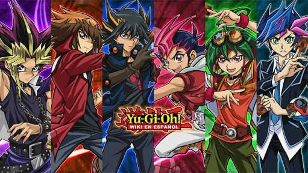
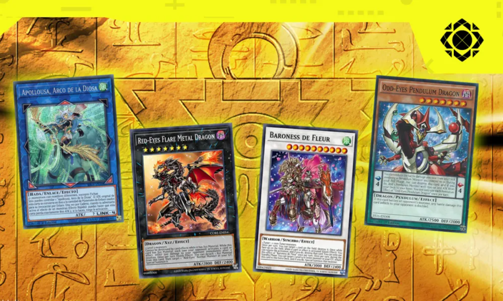

Principal
¿Por qué jugar Yugioh? 1
¿Por qué jugar Yugioh? 2
¿Dónde jugarlo?
¿Armar Deck?
Reglas Básicas
¡Aprende y venceras!
Recomendaciones Extras TCG
Diviertete!
Contactos
¿Por qué jugar Yu-gi-oh? pt 2


Por ejemplo, está una de mis canciones favoritas de Yu-gi-oh, el intro 2 del anime Yu-gi-oh Zexal, puedes escucharlo aquí: